Blue Cross Blue Shield
Some of My Design Work
Some of My Design Work
As an interface designer at BCBSMS I was responsible for designing new features for a number of different applications, and ended up being able to redesign many of them. Now its just a matter of getting them into production. I came in knowing there were some big challenges, and it wasn't just design related. The amount of technical debt was pretty staggering. There were plenty of table based layouts with inline styles to contend with. The back-end code was often wrapped up with the front-end html. An application might have plain javascript in one area, jQuery and/or Dojo in another, and our newest updates done using Angular.
Because of the way the applications had been maintained it made doing any sort of company wide or whole application redesign not very feasible. But I came in knowing the challenges and was going to get things done if I had to do a lot of the work myself, which ended up happening. To move projects along I started building out demos for some of the applications, which turned into doing the html and css for those applications to hand off to the front-end developers to complete the Angular work. Our two front-end developers were fresh out of college and so I took the lead in building out my own designs to hand off to them for the angular implementation.
The style guide started out simple, as a Photoshop file that contained our updated color palette, icons and common form elements. We ended up with two main style guides, one for newer angular applications we were creating, and one to add features and try to maintain a consistent look on our legacy applications, which was never really able to be done before.
With everything I touched, the goal was the same: simplicity and consistency. As much as I wanted to take a sledgehammer to a lot of our applications, most of the time design goals were to reduce the number of colors and styles, cleaning up what I easily could, and continuing to push for stricter enforcement of standards, taking every little win where I could. In order to get a consistent look across applications, even if it wasn't great design, we needed to first get a solid foundation to work with.
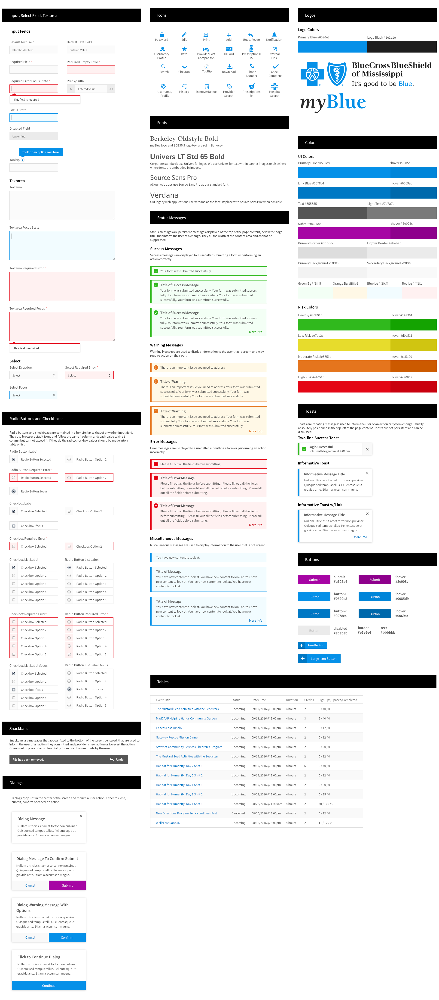The style guide was useful for designers but I also helped create a design system that documented front-end styles and provided a standard css file for front-end developers to use to start new projects. The design system defined validation rules, helper text and error states for form elements and the html and css for larger components
The below designs are from the member portal. I went with a dashboard style navigation that I could use a similar style for in the iOS and Android member apps.
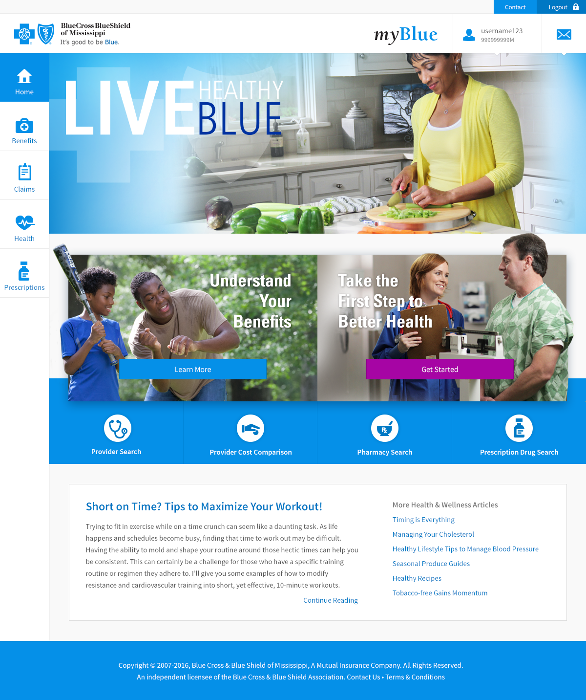 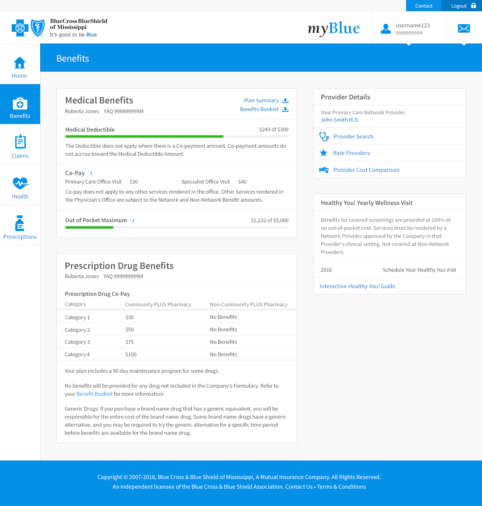The main goal of the Claims redesign was to reduce customer calls. Although the design really needed updating, we were able to determine that the main cause of customer calls was in fact an issue with the descriptions of services provided. By providing more descriptive procedure details, we were able to significantly reduce customer service claims questions.
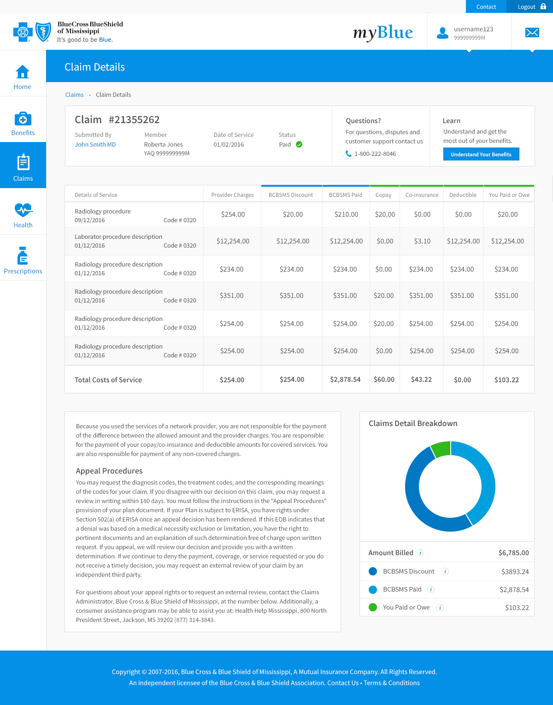 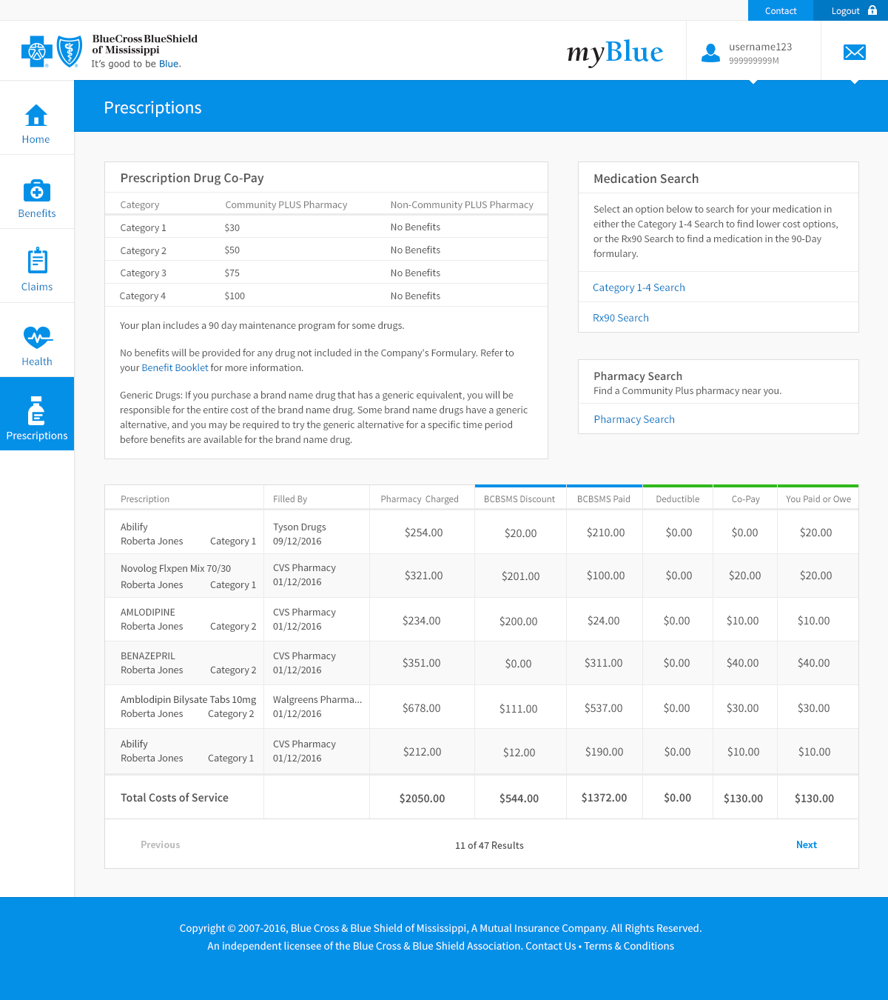 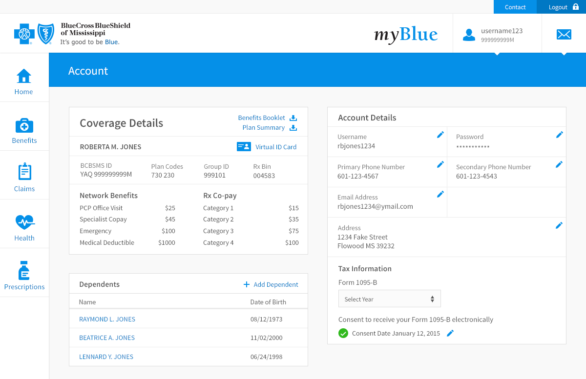Along with our web applications, I was the only designer with mobile experience, so I did all the work on the Android and iOS applications.
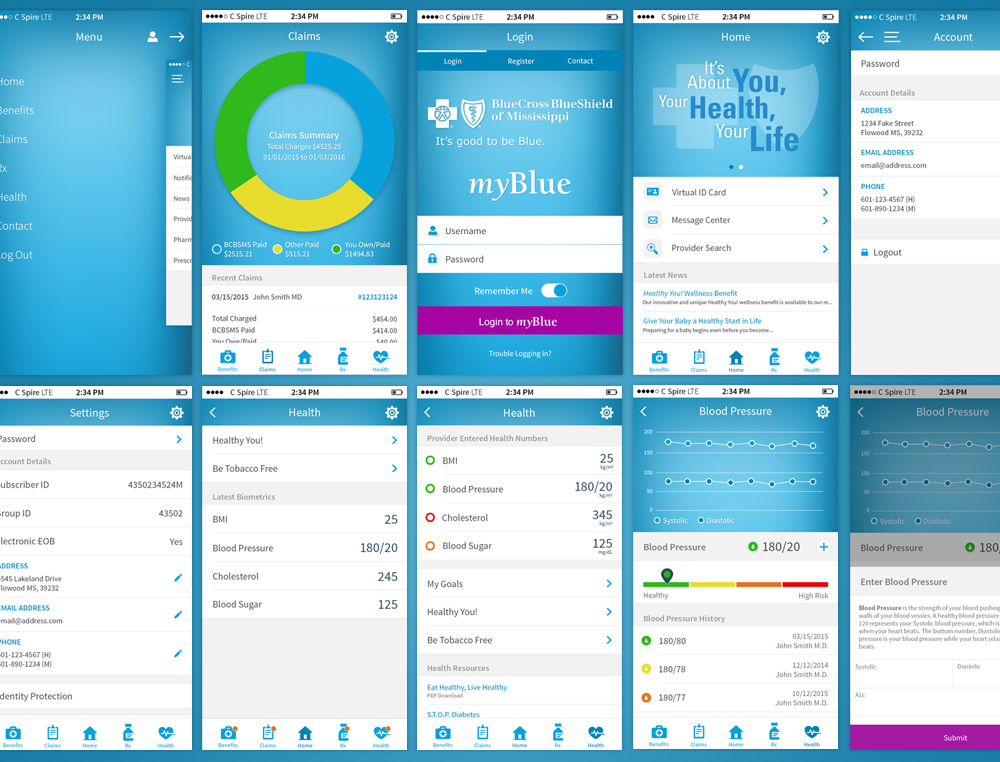When I got to BCBSMS they were sending plain text emails so one of the experience improvements we worked on was created email templates. One of our bigger issues was getting new customers to continue to login to myBlue after initially signing up so well designed onboarding emails was a big part of that.
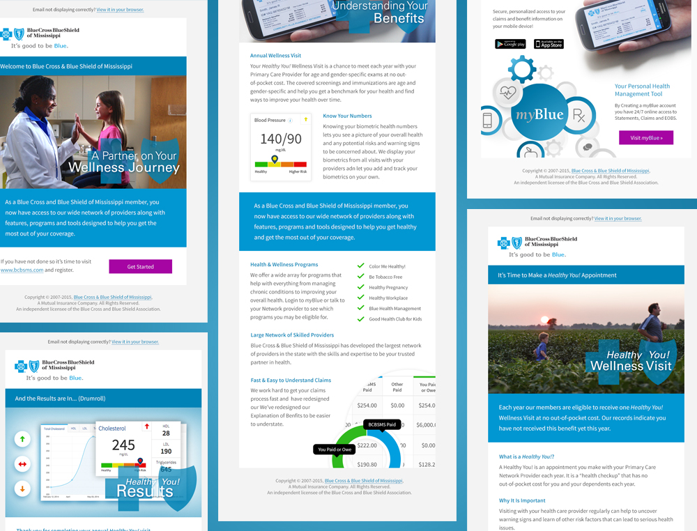myBlue is broken down into multiple applications based on the user type: member, provider, agent, employee and so on. myBlue Provider is the portal for our network physicians. The Patient Detail below is redesign I did that gives the provider an overview of a patient's health, their biometrics, prescriptions, contact info, and recent health activity.
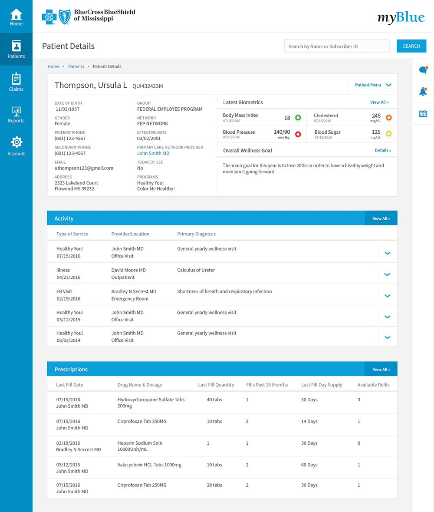myBlue Employee was a brand new application I work with the business area to create, to replace a third party application we no longer wanted to use. They had a pretty big laundry list of tasks that needed to be tracked including employee workouts, classes, and community service events, only a few of which the other application was capable of doing. We also implemented an announcement feature, simple two way messaging since email is locked down for a lot of employees and fitness tools to monitor employees fitness goals.
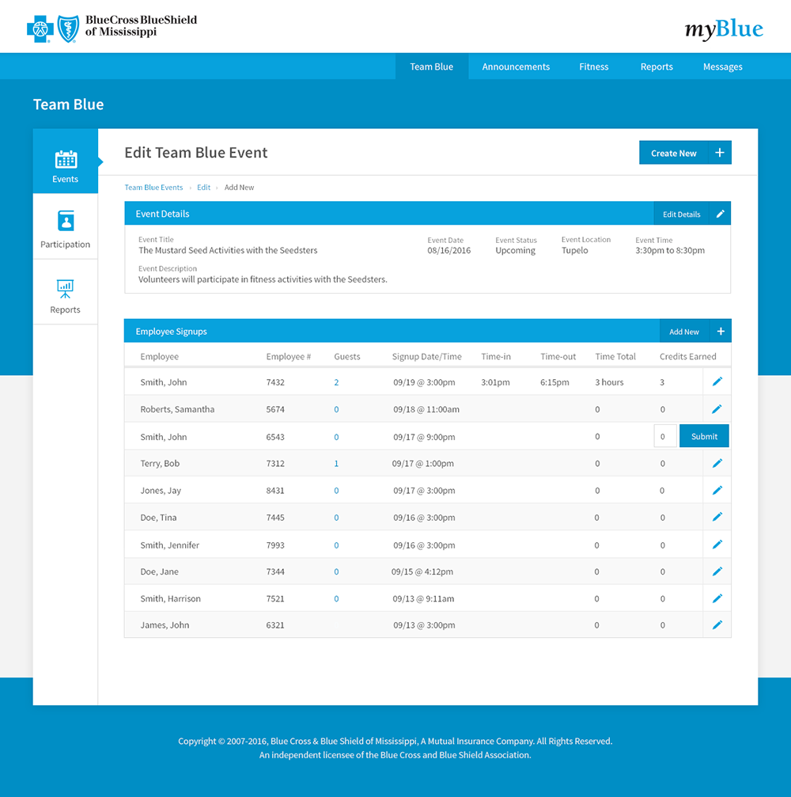Concept for an updated quote process to go with the bcbsms.com redesign. Greatly reduced the number of fields required to get to the quote and then displayed three popular options to simplify the quote process. The complete list of options is still available for those looking for specific coverage.
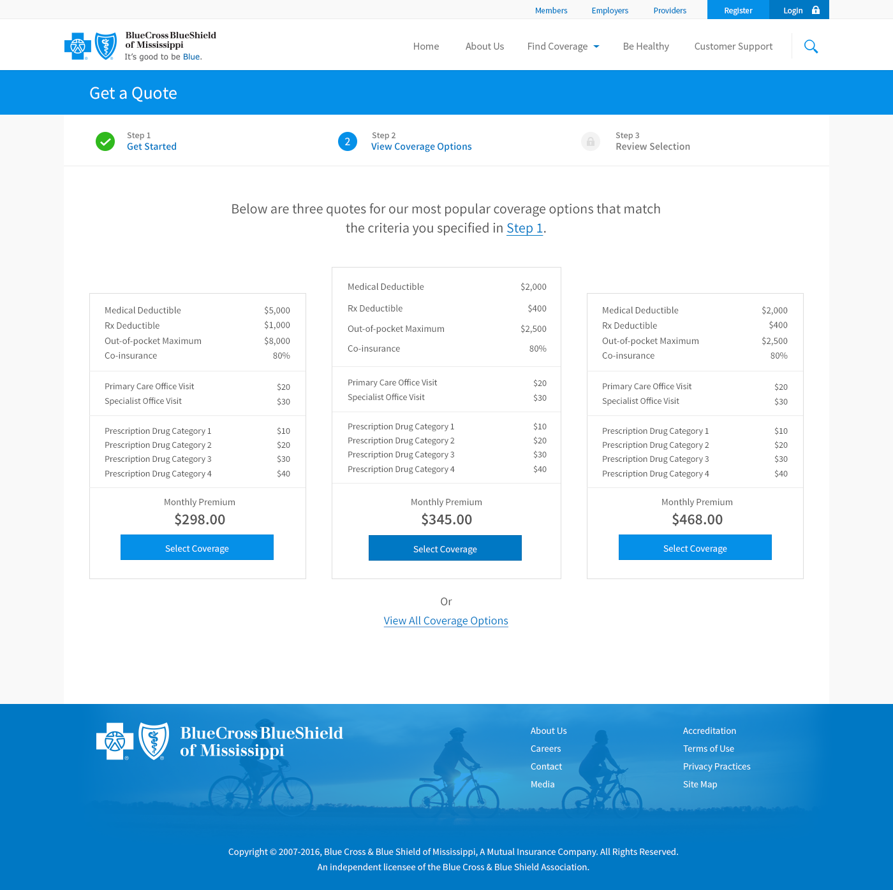Finally, I'll leave you with some different components to show some of my other design work. This is only a small sample of the interfaces I designed but it gives a little idea as to the style I was going for.
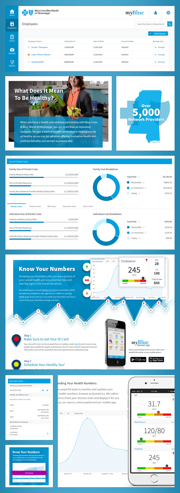Overall, it was a great experience. We don't always get to work on modern, brand new applications. A lot of the challenges of this position was the compromises and challenges of working with legacy code and applications.